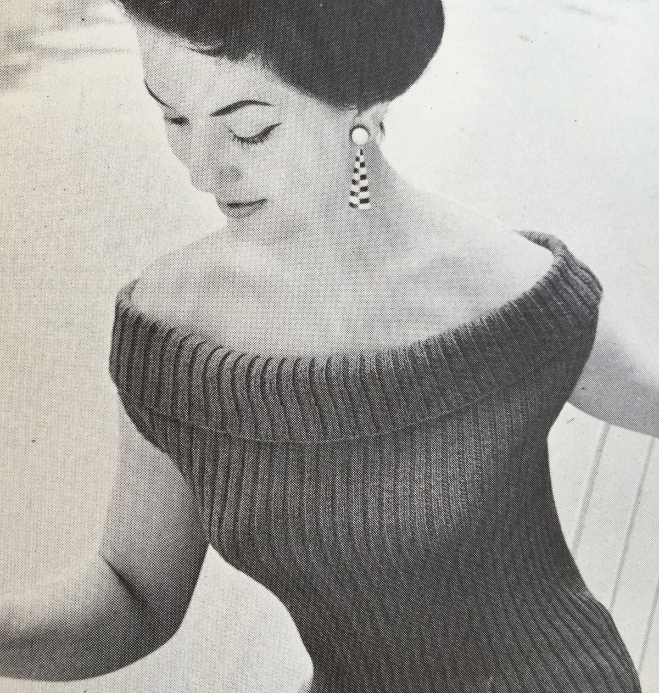
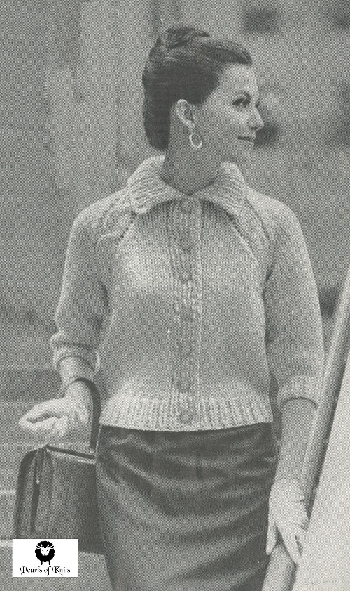

Where every stitch finds its colour, and every yarn its story.


A photograph, a palette, and a quiet kind of magic.
A black and white still, or a snap from your studio. The fabric does the rest.
From a yarn shade card, a Pantone book, or a colour you saw in a dream.
Brush, paint, or recolour the whole garment. Save your favourite versions.
Colour is a power which directly influences the soul, and yarn is colour you can hold in your hands.